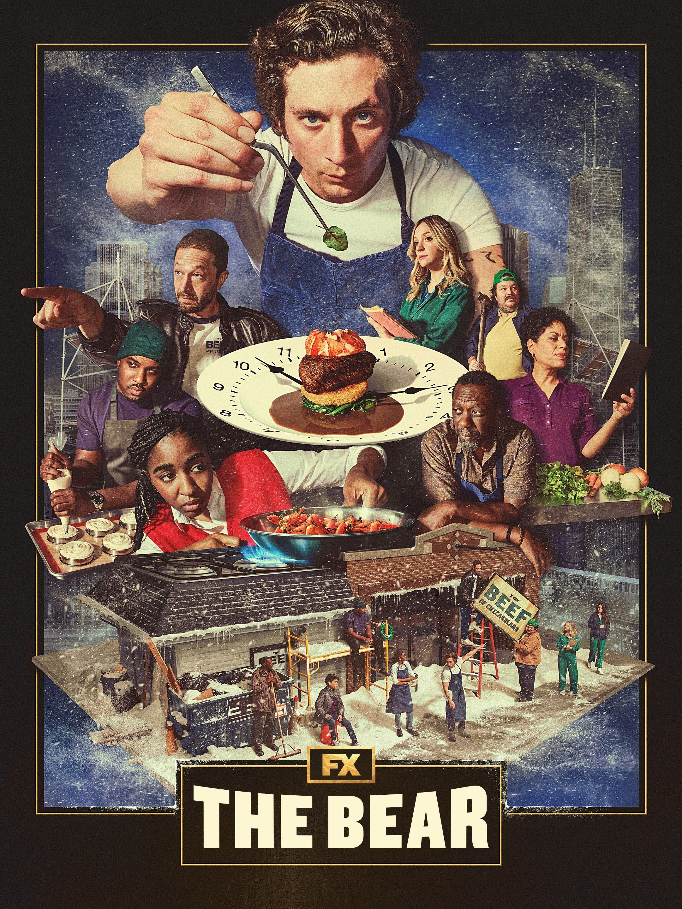

Shane's Critic Corner
Shane Home
|
Welcome
|
My Personal Favorites
|
A Movie Review
|
Send an email
All-time Favorites

Rewatchables
Everything Everywhere All At Once
No Country for Old Men
Eternal Sunshine of the Spotless Mind
Spirited Away
Into the Spider-Verse
Whiplash
Shane
The Man Who Knew Too Much